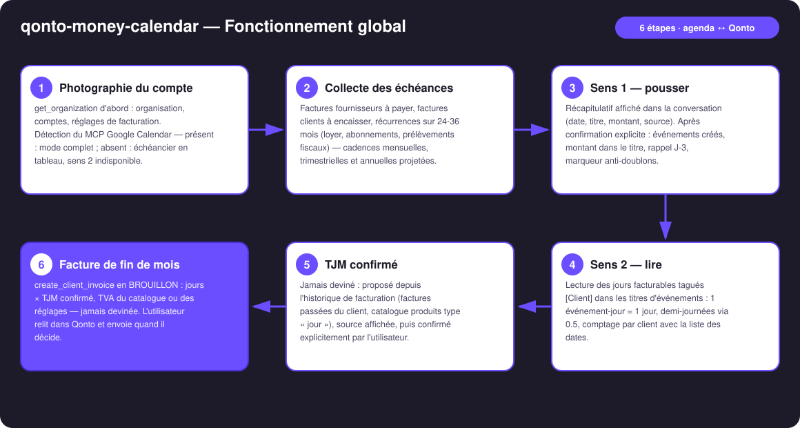
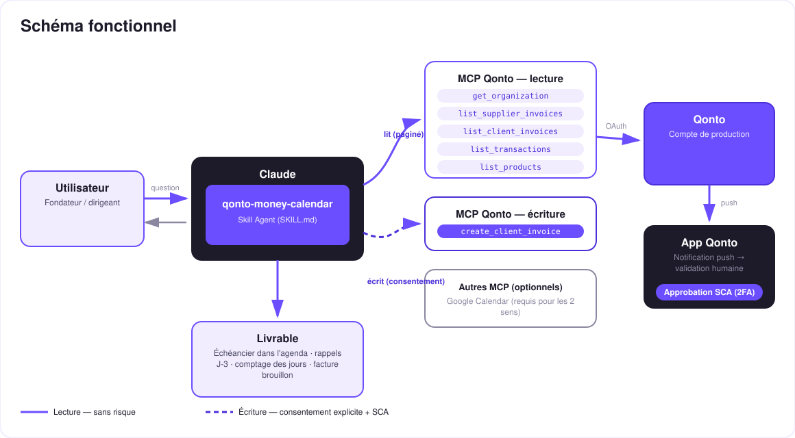

La trésorerie dans l'agenda, dans les deux sens — les échéances deviennent des événements, les jours tagués deviennent des factures.
L'argent vit dans des échéances, pas dans des listes. Et toi, tu vis dans ton agenda — pas dans un export comptable. Le skill fait de Google Calendar le tableau de bord de ton mois financier :
Factures fournisseurs à payer, factures clients à encaisser, récurrences détectées sur 24-36 mois — montant dans le titre, rappel J-3.
Les jours tagués [Client] dans l'agenda sont comptés → facture de fin de mois (jours × TJM confirmé) en brouillon dans Qonto.
Aucun événement créé sans récapitulatif confirmé ; relances idempotentes — mise à jour, jamais de doublons.
Déduit des factures passées et du catalogue produits, source affichée, puis confirmé explicitement — à chaque fois.
| Prérequis | Détail | Obligatoire |
|---|---|---|
| Compte Qonto production | Le skill s'adapte à toute organisation — get_organization d'abord, zéro donnée en dur | ✅ |
| MCP Qonto connecté | Connecteur officiel (claude.ai / Claude Desktop), login OAuth | ✅ |
| MCP Google Calendar | Requis pour les 2 sens. Absent : sens 1 dégradé (échéancier en tableau dans la conversation), sens 2 indisponible — et le skill le dit | ⭕ fortement recommandé |
| Pays | Universel — dates de factures et récurrences depuis l'historique, aucune règle fiscale locale inventée. Échéancier fiscal français complet → skill qonto-tax-pilot | ℹ️ tous pays Qonto |
| Historique 24-36 mois | Nécessaire pour voir les cadences annuelles ; en dessous, dégradation honnête | ⭕ |
Convention de tag [Client] | Pour le sens 2 : un événement « [Acme] sprint sur site » = 1 jour facturable (expliquée au premier usage) | ⭕ sens 2 seulement |

[qonto-money-calendar] sont mis à jour en place, jamais dupliqués
Deux écritures, deux verrous : les événements d'agenda n'existent qu'après le récapitulatif confirmé dans la conversation ; la facture Qonto n'existe qu'en brouillon, après confirmation du TJM et des lignes. Le skill ne déplace aucun argent et n'envoie rien : payer se fait dans l'app Qonto (SCA), envoyer la facture se fait après relecture. C'est le modèle de sécurité, pas une limitation.
| Type d'événement | Source Qonto | Exemple de titre (inventé) | Rappel |
|---|---|---|---|
| Facture fournisseur à payer | list_supplier_invoices (due date) | 💸 Fournisseur Nimbus — 890 € | J-3 |
| Facture client à encaisser | list_client_invoices (impayées) | 💰 Facture INV-2026-042 à encaisser — 4 800 € | J-3 |
| Récurrence mensuelle | Historique 24-36 mois | 💸 Loyer — 1 200 € | J-3 |
| Récurrence trimestrielle / annuelle | Historique 24-36 mois | 💸 Assurance annuelle — 640 € (estimé) | J-3 |
| Prélèvement fiscal détecté | Historique (prélèvements) | 💸 Prélèvement TVA — ~2 100 € (estimé) | J-3 |
Tous les montants ci-dessus sont des exemples inventés. Les montants issus de récurrences sont marqués « estimé » dans l'événement.
| Dans le titre de l'événement | Compté comme |
|---|---|
[Acme] sprint sur site | 1 jour facturable pour Acme |
Événement [Acme] posé sur 3 jours | 3 jours |
[Acme] 0.5 atelier | 0,5 jour |
| Sans crochets | Ignoré (pas facturable) |
Pas d'outil de plus, pas de time-tracker : ton agenda est le time-tracker. Fin du mois, le skill compte, propose le TJM avec sa source, attend ta confirmation — puis crée le brouillon.
| Sortie | Format | Quand |
|---|---|---|
| Réponse dans la conversation | Tableaux markdown : échéancier, récap avant écriture, comptage des jours, résumé de facture | Toujours — c'est la base |
| Google Calendar | Événements datés, montant dans le titre, rappel J-3, marqueur anti-doublons | Si le MCP Calendar est présent et le récap confirmé |
| Facture Qonto | create_client_invoice en brouillon, section Facturation | Sens 2, après confirmation TJM + lignes |
La démo ≤ 3 min jointe à la PR suit le storyboard : le problème (l'argent vit dans des échéances) → sens 1 : le récap puis l'agenda qui se peuple → la convention [Client] et le TJM confirmé → split-screen agenda / Qonto : 12 jours tagués → facture en brouillon → wrap-up. Le script détaillé de tournage est conservé en interne (hors dépôt).
| Idée | Effort | Note |
|---|---|---|
| Rapprochement au fil de l'eau : marquer ✅ les événements dont le paiement est passé en banque | Moyen | Réutilise list_transactions + le marqueur d'événement |
| Multi-calendriers : un agenda « Argent » dédié, séparé de l'agenda perso | Faible | Simple option à la création |
| Échéancier fiscal estimé complet dans l'agenda | Faible | Cross-skill : qonto-tax-pilot calcule, ce skill pousse |
| Devis avant facture pour les nouveaux clients tagués | Faible | create_quote existe côté MCP |
| Récap hebdo « ta semaine d'argent » chaque lundi | Moyen | Le rituel du lundi matin, prêt à lire |
delete_client_invoice